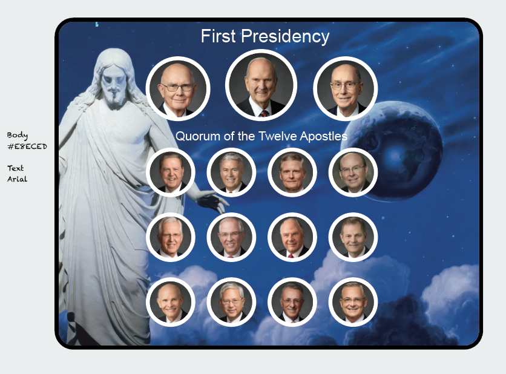

WEB Fundamentals
WDD 130
ICE Challenge: Apostles Spotlight
Overview
- Task: Design a web page to spotlight the apostles.
- Purpose: Practice html and css and follow a design.
Instructions
-
Open the files
-
Download Starter files
Start by downloading the zip file: Apostle Spotlight Zip and unzipping it and saving the apostle_spotlight folder in your ice folder -
Open in VS Code
Open the apostle_spotlight folder in VS Code, then locate apostles.html and open to edit.
-
-
Convert Design to Code
-
Follow Wireframe
Locate the file ApostleSpotlight_Design.png and view the image. Follow the design and in apostles.html create the html and css code according to the design. Here is the image:
-
-
Challenge: Make it dynamic
-
Mouse over
When the mouse is hover over one of the apostles have the outline change colors.
-
-
Submit
Instead of a zip file, please submit the following:
- A screenshot (png or jpg) of your working page.
- Your HTML file.